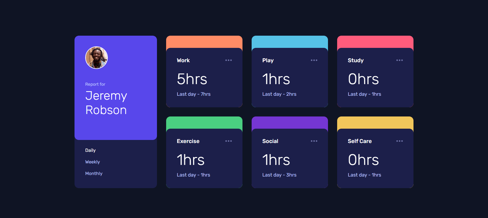

Time tracking dashboard
This is a solution for the Time tracking dashboard challenge on Frontend Mentor. Users should be able to view the optimal layout for the site depending on their device's screen size, see hover states for all interactive elements on the page and switch between viewing Daily, Weekly, and Monthly stats. I used HTML, CSS, Sass, Grid and Javascript.
